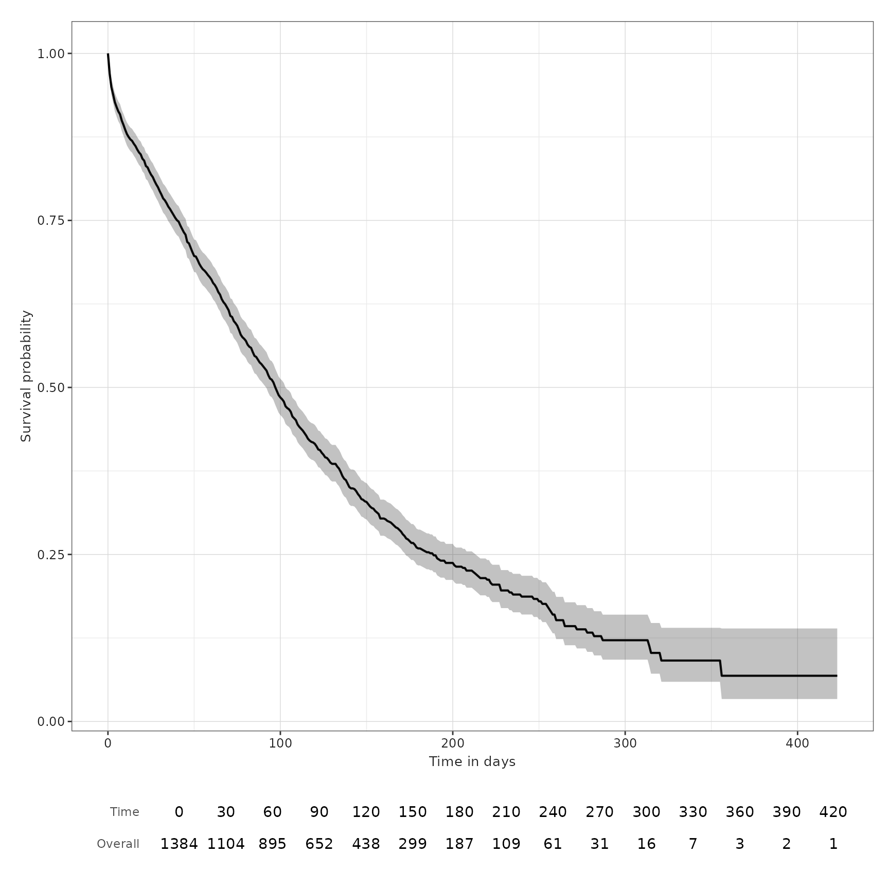
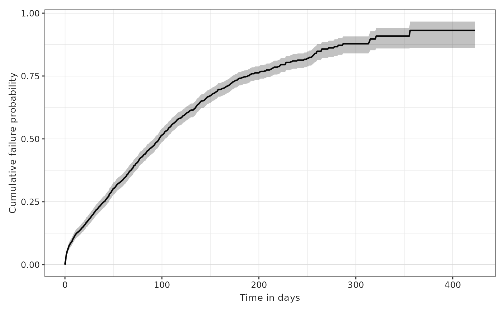

Single outcome event of interest
a01_Single_event_of_interest.RmdSet up
Let us first load the packages required.
We will create a cdm reference containing our example MGUS2 survival dataset. In practice you would use the CDMConnector package to connect to your data mapped to the OMOP CDM.
cdm <- CohortSurvival::mockMGUS2cdm()The mgus2 dataset contains survival data of 1341 sequential patients
with monoclonal gammopathy of undetermined significance (MGUS),
converted to the OMOP CDM from the one in the package
survival. For more information see
?survival::mgus2 .
In this vignette we will first estimate survival following a
diagnosis of MGUS, with death being our primary outcome of interest. In
a study we would typically need to first define study cohorts ourselves,
before starting the analysis, but in the case of our example data we
already have these cohorts available: mgus_diagnosis for
our target cohort and death_cohort for our outcome
cohort.
In our target cohort we also have a number of additional features (age or sex of the patients, for instance) recorded, which we will use for stratification.
Let us first take a quick look at the data we will be working with:
cdm$mgus_diagnosis %>%
glimpse()
#> Rows: ??
#> Columns: 10
#> Database: DuckDB v1.2.1 [unknown@Linux 6.8.0-1021-azure:R 4.4.3/:memory:]
#> $ cohort_definition_id <int> 1, 1, 1, 1, 1, 1, 1, 1, 1, 1, 1, 1, 1, 1, 1, 1, 1…
#> $ subject_id <int> 1, 2, 3, 4, 5, 6, 7, 8, 9, 10, 11, 12, 13, 14, 15…
#> $ cohort_start_date <date> 1981-01-01, 1968-01-01, 1980-01-01, 1977-01-01, …
#> $ cohort_end_date <date> 1981-01-01, 1968-01-01, 1980-01-01, 1977-01-01, …
#> $ age <dbl> 88, 78, 94, 68, 90, 90, 89, 87, 86, 79, 86, 89, 8…
#> $ sex <fct> F, F, M, M, F, M, F, F, F, F, M, F, M, F, M, F, F…
#> $ hgb <dbl> 13.1, 11.5, 10.5, 15.2, 10.7, 12.9, 10.5, 12.3, 1…
#> $ creat <dbl> 1.30, 1.20, 1.50, 1.20, 0.80, 1.00, 0.90, 1.20, 0…
#> $ mspike <dbl> 0.5, 2.0, 2.6, 1.2, 1.0, 0.5, 1.3, 1.6, 2.4, 2.3,…
#> $ age_group <chr> ">=70", ">=70", ">=70", "<70", ">=70", ">=70", ">…
cdm$death_cohort %>%
glimpse()
#> Rows: ??
#> Columns: 4
#> Database: DuckDB v1.2.1 [unknown@Linux 6.8.0-1021-azure:R 4.4.3/:memory:]
#> $ cohort_definition_id <int> 1, 1, 1, 1, 1, 1, 1, 1, 1, 1, 1, 1, 1, 1, 1, 1, 1…
#> $ subject_id <int> 1, 2, 3, 4, 5, 6, 7, 8, 10, 11, 12, 13, 14, 15, 1…
#> $ cohort_start_date <date> 1981-01-31, 1968-01-26, 1980-02-16, 1977-04-03, …
#> $ cohort_end_date <date> 1981-01-31, 1968-01-26, 1980-02-16, 1977-04-03, …Overall survival
To estimate survival we only need to call the
estimateSingleEventSurvival() function. This will give us
all necessary results to assess the survival of the whole target cohort.
Note that the output of this function will be in a
summarised_result format. For more information on this type
of object, check the
documentation of the package omopgenerics.
This will allow us to use functions from other packages that work
with summarised_result objects, for instance, for plotting
or visualising our output.
Alternatively, we can convert the output to a more intuitive format if we prefer to use other tools.
Let us first produce these overall results. Note that the minimal
amount of inputs necessary for this function are the cdm
object and the names of the target and outcome cohorts, which must be
cohort tables in the cdm provided.
MGUS_death <- estimateSingleEventSurvival(
cdm,
targetCohortTable = "mgus_diagnosis",
outcomeCohortTable = "death_cohort"
)
MGUS_death %>%
glimpse()
#> Rows: 1,354
#> Columns: 13
#> $ result_id <int> 1, 1, 1, 1, 1, 1, 1, 1, 1, 1, 1, 1, 1, 1, 1, 1, 1, 1,…
#> $ cdm_name <chr> "mock", "mock", "mock", "mock", "mock", "mock", "mock…
#> $ group_name <chr> "target_cohort", "target_cohort", "target_cohort", "t…
#> $ group_level <chr> "mgus_diagnosis", "mgus_diagnosis", "mgus_diagnosis",…
#> $ strata_name <chr> "overall", "overall", "overall", "overall", "overall"…
#> $ strata_level <chr> "overall", "overall", "overall", "overall", "overall"…
#> $ variable_name <chr> "outcome", "outcome", "outcome", "outcome", "outcome"…
#> $ variable_level <chr> "death_cohort", "death_cohort", "death_cohort", "deat…
#> $ estimate_name <chr> "estimate", "estimate_95CI_lower", "estimate_95CI_upp…
#> $ estimate_type <chr> "numeric", "numeric", "numeric", "numeric", "numeric"…
#> $ estimate_value <chr> "1", "1", "1", "0.9697", "0.9607", "0.9787", "0.9494"…
#> $ additional_name <chr> "time", "time", "time", "time", "time", "time", "time…
#> $ additional_level <chr> "0", "0", "0", "1", "1", "1", "2", "2", "2", "3", "3"…
class(MGUS_death)
#> [1] "summarised_result" "omop_result" "tbl_df"
#> [4] "tbl" "data.frame"The main output is a summarised_result object with the
usual columns. All the information retrieved by the estimation process
(estimates, events, summary and attrition) is stored in the main output
table, MGUS_death, and its settings attribute
provides information on the different result types available. We can
check this with the settings() function from
omopgenerics.
settings(MGUS_death)
#> # A tibble: 4 × 18
#> result_id result_type package_name package_version group strata additional
#> <int> <chr> <chr> <chr> <chr> <chr> <chr>
#> 1 1 survival_proba… CohortSurvi… 1.0.0 targ… "" "time"
#> 2 2 survival_events CohortSurvi… 1.0.0 targ… "" "time"
#> 3 3 survival_summa… CohortSurvi… 1.0.0 targ… "" ""
#> 4 4 survival_attri… CohortSurvi… 1.0.0 targ… "reas… "reason_i…
#> # ℹ 11 more variables: min_cell_count <chr>, analysis_type <chr>,
#> # censor_on_cohort_exit <chr>, competing_outcome <chr>, eventgap <chr>,
#> # follow_up_days <chr>, group_level <chr>, minimum_survival_days <chr>,
#> # outcome <chr>, outcome_date_variable <chr>, outcome_washout <chr>An advantage of working with a summarised_result object
is that we can join these results with results from other packages like
IncidencePrevalence or CohortCharacteristics
and view them all together in a Shiny App.
The main visualisation functions in the package also work on this
summarised_result object. For instance, if we wish to plot
the survival estimates we can run the following line of code:
plotSurvival(MGUS_death)
We can also decide to add a basic risk table underneath the plot, by
setting the argument riskTable = TRUE.
plotSurvival(MGUS_death, riskTable = TRUE)
This plotting function has some other parameters which can be tuned.
For instance, we can plot the cumulative failure instead of the survival
probability by asking for cumulativeFailure = TRUE. You can
check all the plotting options in ?plotSurvival.
plotSurvival(MGUS_death, ribbon = FALSE)
plotSurvival(MGUS_death, cumulativeFailure = TRUE)
Because the output of the function plotSurvival is a
ggplot, the user can also change other aspects of the plot manually by
adding ggplot lines of code to the plot itself. For instance, we can
switch the plot axes:
plotSurvival(MGUS_death) + theme_bw() + ggtitle("Plot survival") + coord_flip()
Apart from the survival estimates retrieved, our main output also contains information on the survival events, summary and attrition. There are different functions in the package which we can use to present that information in a tidy way.
The function tableSurvival() provides a survival
summary. This includes the number of records (people in the target
cohort), the number of events (people who experience the outcome event
in the target cohort), and the median survival and restricted mean
survival if available. This is provided for all combinations of target
and outcome cohorts and stratifications available in the result.
tableSurvival(MGUS_death)| CDM name | Target cohort | Outcome name |
Estimate name
|
|||
|---|---|---|---|---|---|---|
| Number records | Number events | Median survival (95% CI) | Restricted mean survival (SE) | |||
| mock | mgus_diagnosis | death_cohort | 1,384 | 963 | 98.00 (92.00, 103.00) | 133.00 (4.00) |
Note that if less than 50% of the people in the target cohort
experience the event, the median survival will not be reported (i.e. the
output will be NA(NA,NA)).
Note, additionally, that restricted mean survival is reported for the
whole study period (as long as follow up is available) by default,
unless asked otherwise. Therefore,
restrictedMeanFollowUp = NULL will provide this result for
follow up as long as available. This parameter can be changed in the
main estimation function, if the user wants to. If this parameter is set
to a number greater than the follow up available, the summary table will
display NA for this value. For instance, if we ask for a
restricted mean follow up of 2 years in a target cohort that we can only
follow for 300 days, tableSurvival will report a Restricted
mean survival of NA.
This summary table function can also report survival at requested times. For instance, we might want to know the survival estimates for the cohort at 30, 90 and 180 days. We would do that as such:
tableSurvival(MGUS_death, times = c(30,90,180))| CDM name | Target cohort | Outcome name |
Estimate name
|
||||||
|---|---|---|---|---|---|---|---|---|---|
| Number records | Number events | Median survival (95% CI) | Restricted mean survival (SE) | 30 days survival estimate | 90 days survival estimate | 180 days survival estimate | |||
| mock | mgus_diagnosis | death_cohort | 1,384 | 963 | 98.00 (92.00, 103.00) | 133.00 (4.00) | 79.39 (77.28, 81.55) | 53.17 (50.56, 55.91) | 25.90 (23.35, 28.72) |
If we ask for a survival estimate which is not available, the function will not return it. For instance, in this case, follow up is not available after 500 days, so:
tableSurvival(MGUS_death, times = c(30,90,180, 500))| CDM name | Target cohort | Outcome name |
Estimate name
|
||||||
|---|---|---|---|---|---|---|---|---|---|
| Number records | Number events | Median survival (95% CI) | Restricted mean survival (SE) | 30 days survival estimate | 90 days survival estimate | 180 days survival estimate | |||
| mock | mgus_diagnosis | death_cohort | 1,384 | 963 | 98.00 (92.00, 103.00) | 133.00 (4.00) | 79.39 (77.28, 81.55) | 53.17 (50.56, 55.91) | 25.90 (23.35, 28.72) |
Other options of this table include giving the estimates in years
instead of days. Check ?tableSurvival for additional
options included in the function parameters.
tableSurvival(MGUS_death, times = c(1,2), timeScale = "years")| CDM name | Target cohort | Outcome name |
Estimate name
|
||||
|---|---|---|---|---|---|---|---|
| Number records | Number events | Median survival (95% CI) | Restricted mean survival (SE) | 1 years survival estimate | |||
| mock | mgus_diagnosis | death_cohort | 1,384 | 963 | 0.27 (0.25, 0.28) | 0.36 (0.01) | 6.84 (3.36, 13.92) |
One of them is a special input called .options, which
allows the user to ask for a variety of additional formatting choices.
To see the list of options, we can call
optionsTableSurvival :
optionsTableSurvival()
#> $decimals
#> integer percentage numeric proportion
#> 0 2 2 2
#>
#> $decimalMark
#> [1] "."
#>
#> $bigMark
#> [1] ","
#>
#> $delim
#> [1] "\n"
#>
#> $includeHeaderName
#> [1] TRUE
#>
#> $includeHeaderKey
#> [1] TRUE
#>
#> $style
#> [1] "default"
#>
#> $na
#> [1] "-"
#>
#> $title
#> NULL
#>
#> $subtitle
#> NULL
#>
#> $caption
#> NULL
#>
#> $groupAsColumn
#> [1] FALSE
#>
#> $groupOrder
#> NULL
#>
#> $merge
#> [1] "all_columns"So, for instance, if we want to add a title to the table and also change the decimal mark to “,” and the big mark to “.”, we would call:
tableSurvival(MGUS_death, .options = list(title = "Survival summary",
decimalMark = ",",
bigMark = "."))| Survival summary | ||||||
| CDM name | Target cohort | Outcome name |
Estimate name
|
|||
|---|---|---|---|---|---|---|
| Number records | Number events | Median survival (95% CI) | Restricted mean survival (SE) | |||
| mock | mgus_diagnosis | death_cohort | 1.384 | 963 | 98,00 (92,00, 103,00) | 133,00 (4,00) |
Another function that provides tabular results is
riskTable. We may use it if we want a tidy presentation of
the number of people at risk, number of people experiencing an event,
and number of people censored, at all point of time available. Note that
the timepoints will be the ones provided by the estimation function,
which is by default eventGap = 30, so every 30 days. We can
change that parameter at that stage if we want aggregated events at a
smaller or bigger interval. Other options for this table are similar to
the ones of tableSurvival.
riskTable(MGUS_death)| CDM name | Target cohort | Outcome name | Time | Event gap |
Estimate name
|
||
|---|---|---|---|---|---|---|---|
| Number at risk | Number events | Number censored | |||||
| mock | mgus_diagnosis | death_cohort | 0 | 30 | 1,384 | 0 | 0 |
| 30 | 30 | 1,104 | 285 | 3 | |||
| 60 | 30 | 895 | 182 | 27 | |||
| 90 | 30 | 652 | 167 | 79 | |||
| 120 | 30 | 438 | 131 | 74 | |||
| 150 | 30 | 299 | 86 | 54 | |||
| 180 | 30 | 187 | 57 | 54 | |||
| 210 | 30 | 109 | 20 | 58 | |||
| 240 | 30 | 61 | 15 | 33 | |||
| 270 | 30 | 31 | 11 | 18 | |||
| 300 | 30 | 16 | 4 | 10 | |||
| 330 | 30 | 7 | 3 | 6 | |||
| 360 | 30 | 3 | 1 | 3 | |||
| 390 | 30 | 2 | 0 | 1 | |||
| 420 | 30 | 1 | 0 | 1 | |||
| 424 | 30 | 1 | 1 | 0 | |||
Survival format
If we are only working on a survival study, and we want to manually inspect the result tables, we might want to put them in an easier format to work with. Note, however, that the visualisation functions from this package will not work with this new result format.
The function asSurvivalResult() allows us to convert the
result to a survival format, with the main table containing the
estimates and the information on events, summary and attrition being
stored as attributes.
# Transforming the output to a survival result format
MGUS_death_survresult <- MGUS_death %>%
asSurvivalResult()
MGUS_death_survresult %>%
glimpse()
#> Rows: 425
#> Columns: 10
#> $ cdm_name <chr> "mock", "mock", "mock", "mock", "mock", "mock", "m…
#> $ target_cohort <chr> "mgus_diagnosis", "mgus_diagnosis", "mgus_diagnosi…
#> $ outcome <chr> "death_cohort", "death_cohort", "death_cohort", "d…
#> $ competing_outcome <chr> "none", "none", "none", "none", "none", "none", "n…
#> $ variable <chr> "death_cohort", "death_cohort", "death_cohort", "d…
#> $ time <dbl> 0, 1, 2, 3, 4, 5, 6, 7, 8, 9, 10, 11, 12, 13, 14, …
#> $ result_type <chr> "survival_probability", "survival_probability", "s…
#> $ estimate <dbl> 1.0000, 0.9697, 0.9494, 0.9386, 0.9270, 0.9198, 0.…
#> $ estimate_95CI_lower <dbl> 1.0000, 0.9607, 0.9379, 0.9260, 0.9134, 0.9056, 0.…
#> $ estimate_95CI_upper <dbl> 1.0000, 0.9787, 0.9610, 0.9513, 0.9408, 0.9342, 0.…
# Events, attrition and summary are now attributes of the result object
attr(MGUS_death_survresult,"events") %>%
glimpse()
#> Rows: 16
#> Columns: 10
#> $ cdm_name <chr> "mock", "mock", "mock", "mock", "mock", "mock", "moc…
#> $ target_cohort <chr> "mgus_diagnosis", "mgus_diagnosis", "mgus_diagnosis"…
#> $ outcome <chr> "death_cohort", "death_cohort", "death_cohort", "dea…
#> $ competing_outcome <chr> "none", "none", "none", "none", "none", "none", "non…
#> $ variable <chr> "death_cohort", "death_cohort", "death_cohort", "dea…
#> $ time <dbl> 0, 30, 60, 90, 120, 150, 180, 210, 240, 270, 300, 33…
#> $ eventgap <chr> "30", "30", "30", "30", "30", "30", "30", "30", "30"…
#> $ n_risk <dbl> 1384, 1104, 895, 652, 438, 299, 187, 109, 61, 31, 16…
#> $ n_events <dbl> 0, 285, 182, 167, 131, 86, 57, 20, 15, 11, 4, 3, 1, …
#> $ n_censor <dbl> 0, 3, 27, 79, 74, 54, 54, 58, 33, 18, 10, 6, 3, 1, 1…
attr(MGUS_death_survresult,"summary") %>%
glimpse()
#> Rows: 1
#> Columns: 24
#> $ cdm_name <chr> "mock"
#> $ target_cohort <chr> "mgus_diagnosis"
#> $ outcome <chr> "death_cohort"
#> $ competing_outcome <chr> "none"
#> $ variable <chr> "death_cohort"
#> $ number_records <dbl> 1384
#> $ n_events <dbl> 963
#> $ restricted_mean_survival <dbl> 133
#> $ restricted_mean_survival_se <dbl> 4
#> $ median_survival <dbl> 98
#> $ median_survival_95CI_lower <dbl> 92
#> $ median_survival_95CI_higher <dbl> 103
#> $ q0_survival <dbl> 0
#> $ q0_survival_95CI_lower <dbl> 0
#> $ q0_survival_95CI_higher <dbl> 0
#> $ q25_survival <dbl> 41
#> $ q25_survival_95CI_lower <dbl> 35
#> $ q25_survival_95CI_higher <dbl> 46
#> $ q75_survival <dbl> 189
#> $ q75_survival_95CI_lower <dbl> 173
#> $ q75_survival_95CI_higher <dbl> 214
#> $ q100_survival <dbl> 424
#> $ q100_survival_95CI_lower <dbl> NA
#> $ q100_survival_95CI_higher <dbl> NA
attr(MGUS_death_survresult,"attrition") %>%
glimpse()
#> Rows: 12
#> Columns: 7
#> $ cdm_name <chr> "mock", "mock", "mock", "mock", "mock", "mock", "moc…
#> $ target_cohort <chr> "mgus_diagnosis_1", "mgus_diagnosis_1", "mgus_diagno…
#> $ outcome <chr> "death_cohort", "death_cohort", "death_cohort", "dea…
#> $ competing_outcome <chr> "none", "none", "none", "none", "none", "none", "non…
#> $ reason <chr> "Initial qualifying events", "Initial qualifying eve…
#> $ variable_name <chr> "number_records", "number_subjects", "excluded_recor…
#> $ count <int> 1384, 1384, 0, 0, 1384, 1384, 0, 0, 1384, 1384, 0, 0We can now directly check all estimates for times 10 to 15, for instance, like this:
MGUS_death_survresult %>%
filter(time %in% c(10:15))
#> # A tibble: 6 × 10
#> cdm_name target_cohort outcome competing_outcome variable time result_type
#> <chr> <chr> <chr> <chr> <chr> <dbl> <chr>
#> 1 mock mgus_diagnosis death_co… none death_c… 10 survival_p…
#> 2 mock mgus_diagnosis death_co… none death_c… 11 survival_p…
#> 3 mock mgus_diagnosis death_co… none death_c… 12 survival_p…
#> 4 mock mgus_diagnosis death_co… none death_c… 13 survival_p…
#> 5 mock mgus_diagnosis death_co… none death_c… 14 survival_p…
#> 6 mock mgus_diagnosis death_co… none death_c… 15 survival_p…
#> # ℹ 3 more variables: estimate <dbl>, estimate_95CI_lower <dbl>,
#> # estimate_95CI_upper <dbl>Changing estimation parameters
So far we have seen how to estimate survival for the whole cohort with the default settings, and how to easily inspect and present the results.
The main function, estimateSingleEventSurvival(), has
many input parameters that we can change to provide results more
targeted to our needs. You can check all options, as usual, with
?estimateSingleEventSurvival. We will comment on some of
these options in this section.
By default, outcomeWashout is set to Inf, which means
that we only include people who have not had the outcome before index
date (as defined by their entry to the target cohort). We can change
that and ask, for instance, for people to only be excluded from the
estimation for a 30 day washout period instead. In this case, we would
write
estimateSingleEventSurvival(cdm, "mgus_diagnosis", "death_cohort", outcomeWashout = 30).
Other options include requiring a minimum number of survival days
(the default is set to minimumSurvivalDays = 1) or cutting
the follow-up at a certain amount of time (the default is set to
followUpDays = Inf, i.e. as much follow up as
available).
We might want to retrieve event information at a smaller interval
than the default, which is every 30 days. Note that if we use the usual
exporting functions from omopgenerics, small numbers will
be suppressed. This can be changed, but it is likely that you cannot
report small counts anyway. Bigger intervals allow for aggregated counts
which tend to be bigger.
Note that if you need to specify the event gap you want in the
plotting function. If you change it in the estimation output, you will
have to change it in the plot accordingly (with either the same
eventGap number or a multiple, like we do in the following
plot).
MGUS_death_gap7 <- estimateSingleEventSurvival(cdm, "mgus_diagnosis", "death_cohort", eventGap = 7)
plotSurvival(MGUS_death_gap7, riskTable = TRUE, riskInterval = 14)With stratification
One of the most important parameters that we might be interested in
using is the strata one. To estimate survival for
particular strata of interest we need these features to have been added
to the target cohort table, as columns. Therefore, for instance, if we
want to stratify our estimation by sex, we need a column named
sex with the necessary information in the target cohort of
interest.
In our mgus example, we already have a number of cohort characteristics added to our diagnosis cohort. If we want to stratify by age group, by sex, and by both at the same time, we would do the following:
MGUS_death_strata <- estimateSingleEventSurvival(cdm,
targetCohortTable = "mgus_diagnosis",
outcomeCohortTable = "death_cohort",
strata = list(c("age_group"),
c("sex"),
c("age_group", "sex"))
) All the previous potential changes in other parameters, as well as
the different visualisation options, still apply in this case.
Therefore, we can get the summary table using
tableSurvival, with now a row for each strata:
tableSurvival(MGUS_death_strata)| CDM name | Target cohort | Age group | Sex | Outcome name |
Estimate name
|
|||
|---|---|---|---|---|---|---|---|---|
| Number records | Number events | Median survival (95% CI) | Restricted mean survival (SE) | |||||
| mock | mgus_diagnosis | overall | overall | death_cohort | 1,384 | 963 | 98.00 (92.00, 103.00) | 133.00 (4.00) |
| <70 | overall | death_cohort | 574 | 293 | 180.00 (158.00, 206.00) | 197.00 (8.00) | ||
| >=70 | overall | death_cohort | 810 | 670 | 71.00 (66.00, 77.00) | 86.00 (3.00) | ||
| overall | F | death_cohort | 631 | 423 | 108.00 (100.00, 121.00) | 143.00 (6.00) | ||
| M | death_cohort | 753 | 540 | 88.00 (79.00, 97.00) | 125.00 (6.00) | |||
| <70 | F | death_cohort | 240 | 109 | 215.00 (179.00, 260.00) | 220.00 (13.00) | ||
| M | death_cohort | 334 | 184 | 158.00 (139.00, 189.00) | 183.00 (10.00) | |||
| >=70 | F | death_cohort | 391 | 314 | 82.00 (75.00, 94.00) | 96.00 (4.00) | ||
| M | death_cohort | 419 | 356 | 61.00 (54.00, 70.00) | 80.00 (5.00) | |||
To plot the results property, we will have to specify faceting and colouring options. One choice is to separate the plots into sex and display different age groups in each one of them:
plotSurvival(MGUS_death_strata,
facet = "sex",
colour = "age_group")
We can add the respective risk tables under each plot as well.
plotSurvival(MGUS_death_strata,
colour = c("age_group", "sex"),
riskTable = TRUE)Because of the density of information in the tables, sometimes the visualisation is not ideal. You might need to export the plot as an image directly into your computer and specify a size big enough to display the tables properly.
When facetting plots, the user can post-process the default graphic to customise facets. Next we show the default facets obtained for “age_group” and “sex” levels.
plotSurvival(MGUS_death_strata, facet = c("age_group", "sex"))Next, we create customised facets by using functions from the ggplot2 package. We set “age_group” to columns and “sex” to rows:
plotSurvival(MGUS_death_strata) +
facet_grid(rows = vars(sex), cols = vars(age_group))
Multiple target or outcome cohorts
Sometimes we might want to estimate survival of multiple targets
and/or outcomes. For the sake of this example, let us use the cohort of
people who are diagnosed with a progression to multiple myeloma, which
we have saved in our mgus2 dataset under the name
progression, as an additional target cohort. We can then
use again the death_cohort as the survival outcome.
The estimateSingleSurvival function does not allow
different tables to be passed for the target and outcome cohorts. If we
have the additional target in another table, like in our case, we will
need to estimate survival in a separate call and group the results a
posteriori using the function bind from
omopgenerics:
MM_death <- estimateSingleEventSurvival(cdm, "progression", "death_cohort")
MGUS_MM_death <- bind(MGUS_death, MM_death)The main output now has the information for both target cohorts, as we can see in the settings table. We can check the summary table and plot the estimates coloured by target cohort like this:
settings(MGUS_MM_death)
#> # A tibble: 8 × 18
#> result_id result_type package_name package_version group strata additional
#> <int> <chr> <chr> <chr> <chr> <chr> <chr>
#> 1 1 survival_proba… CohortSurvi… 1.0.0 targ… "" "time"
#> 2 2 survival_events CohortSurvi… 1.0.0 targ… "" "time"
#> 3 3 survival_summa… CohortSurvi… 1.0.0 targ… "" ""
#> 4 4 survival_attri… CohortSurvi… 1.0.0 targ… "reas… "reason_i…
#> 5 5 survival_proba… CohortSurvi… 1.0.0 targ… "" "time"
#> 6 6 survival_events CohortSurvi… 1.0.0 targ… "" "time"
#> 7 7 survival_summa… CohortSurvi… 1.0.0 targ… "" ""
#> 8 8 survival_attri… CohortSurvi… 1.0.0 targ… "reas… "reason_i…
#> # ℹ 11 more variables: min_cell_count <chr>, analysis_type <chr>,
#> # censor_on_cohort_exit <chr>, competing_outcome <chr>, eventgap <chr>,
#> # follow_up_days <chr>, group_level <chr>, minimum_survival_days <chr>,
#> # outcome <chr>, outcome_date_variable <chr>, outcome_washout <chr>
tableSurvival(MGUS_MM_death)| CDM name | Target cohort | Outcome name |
Estimate name
|
|||
|---|---|---|---|---|---|---|
| Number records | Number events | Median survival (95% CI) | Restricted mean survival (SE) | |||
| mock | mgus_diagnosis | death_cohort | 1,384 | 963 | 98.00 (92.00, 103.00) | 133.00 (4.00) |
| progression | death_cohort | 106 | 94 | 22.00 (16.00, 31.00) | 35.00 (5.00) | |
plotSurvival(MGUS_MM_death, colour = "target_cohort")
An alternative to running the estimation function twice is to have
(or create) a table with both target or outcome cohorts together, each
one with a different cohort_definition_id. Then,
estimateSingleEventSurvival will automatically run the
estimation process for all combinations of target and outcome cohorts
available, and produce independent results.
Imagine, in our case, that we want to estimate time to event for
people with a mgus diagnosis for both outcomes, progression to multiple
myeloma and death. We need to unite both outcome tables into one, which
we can do manually or using the function bind from
omopgenerics:
cdm <- bind(cdm$progression, cdm$death_cohort, name = "outcome_cohorts")Now we can use the new outcome_cohorts table as our
outcome table and we will get results for both analyses. Likewise, we
can check the summary and plot for both outcomes:
MGUS_death_prog <- estimateSingleEventSurvival(cdm, "mgus_diagnosis", "outcome_cohorts")
tableSurvival(MGUS_death_prog)| CDM name | Target cohort | Outcome name |
Estimate name
|
|||
|---|---|---|---|---|---|---|
| Number records | Number events | Median survival (95% CI) | Restricted mean survival (SE) | |||
| mock | mgus_diagnosis | progression | 1,384 | 115 | - | 329.00 (13.00) |
| death_cohort | 1,384 | 963 | 98.00 (92.00, 103.00) | 133.00 (4.00) | ||
plotSurvival(MGUS_death_prog, colour = "outcome")
Export and import a survival output
The survival output with all its attributes can be exported and
imported with the usual tools from omopgenerics, which are
also available as exportable functions in this package. Therefore, to
export the main output, with the usual parameters, we need to do the
following:
x <- tempdir()
exportSummarisedResult(MGUS_death, path = x, fileName = "result.csv")
MGUS_death_imported <- importSummarisedResult(path = file.path(x, "result.csv"))You can read more about exporting and importing
summarised_result objects here.
Note that results are not suppressed at any point in
CohortSurvival by default. However, when exporting results
with exportSummarisedResult, any counts below 5 will be
turned into NA. That can be changed with the parameter
minCellCount. If left as is, the suppression will be done
for small counts, as we can see by plotting the result after exporting
and importing. Note the difference between the following risk table and
the one we plotted at the beginning of this vignette:
plotSurvival(MGUS_death_imported, riskTable = TRUE)Disconnect from the cdm database connection
We finish by disconnecting from the cdm.
cdmDisconnect(cdm)